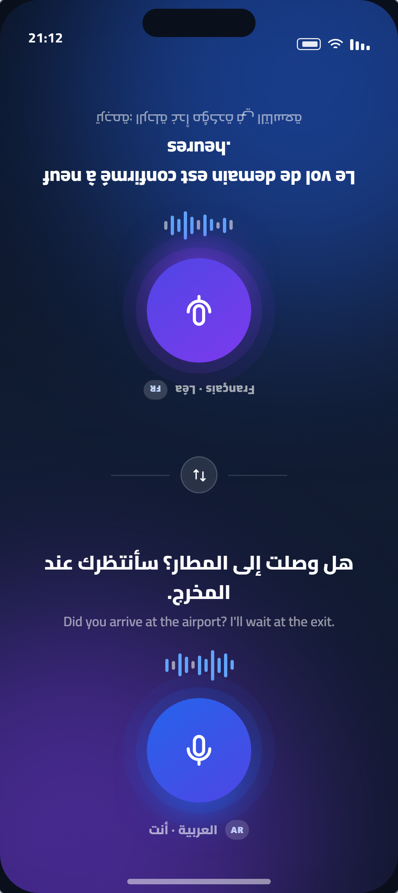
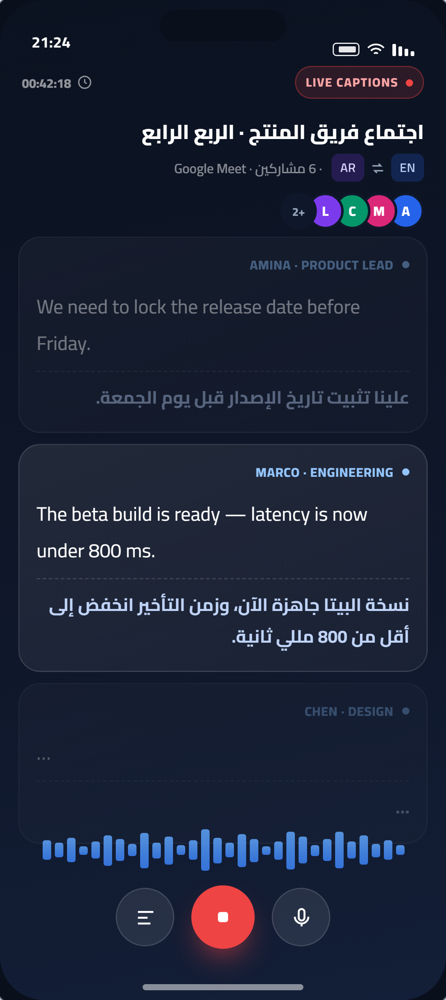
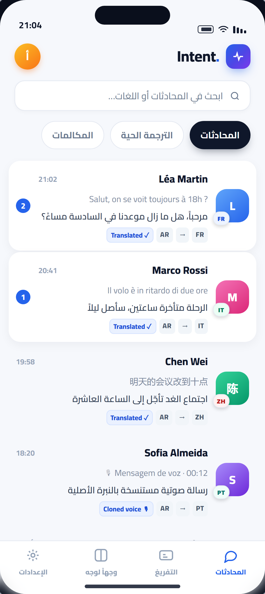
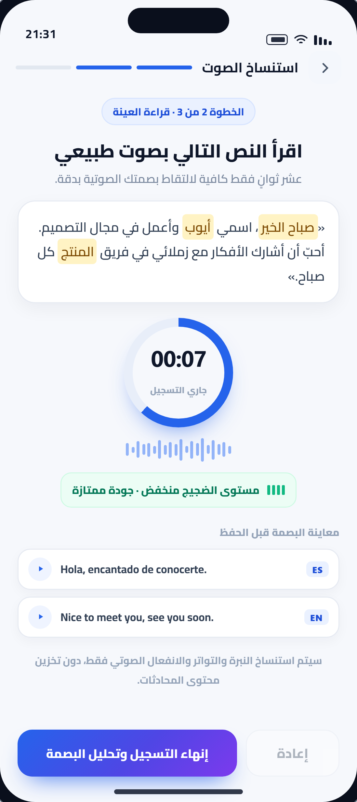
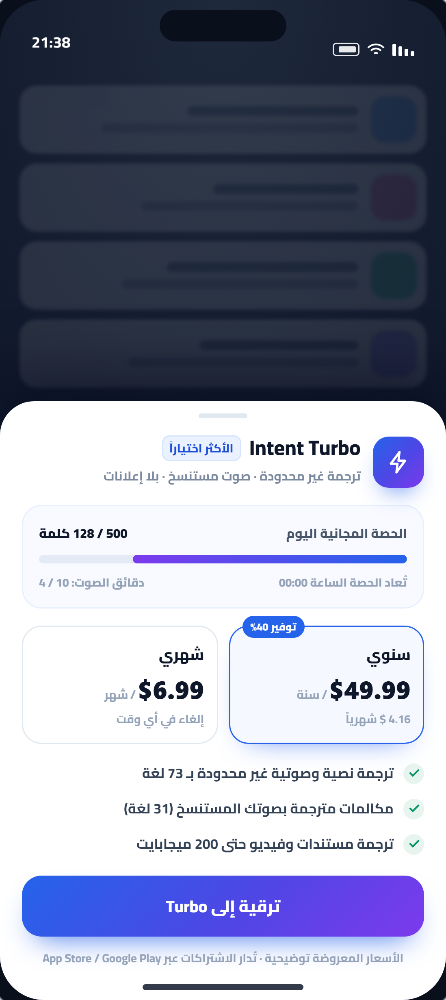
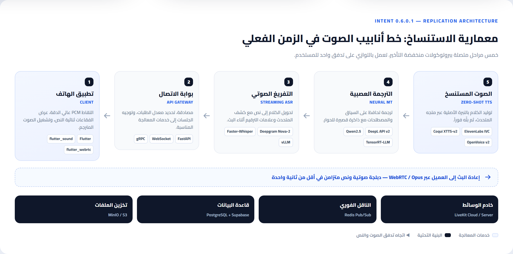

يحوّل هذا الوضع الهاتف المحمول إلى مترجم شخصي مباشر بين شخصين يتواجدان في المساحة الفيزيائية نفسها. يعتمد التصميم على شاشة مقسومة، يتجه نصفها العلوي بزاوية 180 درجة نحو الشخص المقابل، بينما يواجه النصف السفلي مالك الجهاز. يلتقط النظام الصوت الشفهي لكلا الطرفين ويترجمه وينطقه مع تفريغ نصي متزامن في الزمن الفعلي.

تحدٍّ هندسي: التقاط صوتين في مساحة واحدة يرفع خطر التداخل الصوتي (Echo & Cross-talk). الحل المعتاد هو كشف نشاط الكلام (VAD) مع قمع الصدى (AEC) قبل تمرير التدفق إلى ASR، وإلا اختلطت الجُمل وتدهورت الترجمة.
صُممت الميزة لدعم التواجد في اللقاءات الجماعية والمحاضرات والفعاليات متعددة الجنسيات. يستمع النظام إلى الحديث المتدفق، مع تحويله فورياً إلى شريط نصوص ثنائي اللغة ينساب على الشاشة. يضمن هذا المحرك مشاركة مستمرة للمستخدمين في النقاشات الحية وتفادي العزلة اللغوية أثناء الاجتماعات الرسمية أو العائلية.

يدعم التطبيق المكالمات الصوتية والفيديوية المباشرة عبر بروتوكولات VoIP المدمجة مع محركات الترجمة. يتيح النظام استماع كل طرف للمكالمة بلسانه الأم عبر دبلجة صوتية فورية، مع عرض شريط تفريغ نصي بلسانين متزامنين أسفل واجهة الاتصال.
يتضمّن الإصدار مجموعة من الأدوات المساندة المدمجة لرفع إنتاجية المستخدم في سياقات العمل والسفر:
دعم معالجة ملفات Word وPDF وTXT وترجمتها، مع إمكانية تحميل النسخة المترجمة بنقرة واحدة.
معالجة مقاطع الفيديو واستخراج ملفات النص المترجم بصيغ SRT وVTT المتوافقة مع برامج التحرير.
حفظ المفردات الجديدة الناتجة عن المحادثات وإنشاء خطط مراجعة مخصصة لمتعلّمي اللغات.
دعم أسعار الصرف الحية لأكثر من 150 عملة عالمية لتسهيل التسوّق والتعاملات المالية أثناء السفر.
| الميزة الوظيفية | النطاق اللغوي | المحرّك الذكي المعتمد | معدّل التأخير المستهدف |
|---|---|---|---|
| ترجمة المراسلات النصية | 73 لغة نصية | Neural Machine Translation (NMT) | أقل من 250 مللي ثانية |
| توليد واستنساخ الصوت | 31 لغة صوتية | Zero-Shot Voice Cloning TTS | أقل من 1.2 ثانية |
| وضع المواجهة المباشرة | تفاعلي شفهي | Streaming ASR + NMT + TTS | أقل من 800 مللي ثانية |
| التفريغ المباشر للاجتماعات | نصوص متدفقة | Real-time Streaming Subtitling | عرض تدفقي مستمر |
| ترجمة المستندات والفيديو | ملفات خارجية | Document Parser / Subtitle Alignment | حسب حجم الملف المعالج |
مقياس نسبي: كل الأشرطة محسوبة على أساس 1200 مللي ثانية = 100%. الأرقام كما وردت في التقرير المصدر.
في المحادثة المكتوبة يتحمّل المستخدم ربع ثانية. أما في الحوار الصوتي فالحدّ الحاسم قريب من ثانية واحدة: ما بعدها يبدأ الإحساس بأن الطرف الآخر «يتردّد». ولذلك يُعدّ زمن TTS هو القيد الحقيقي على تجربة المكالمات والدبلجة.
المبدأ الحاكم: الأصل حاضر دائماً. لم تُخفَ الرسالة الأصلية بل خُفِّض تباينها فقط — وهذا فرق جوهري بين «التبسيط» و«الإخفاء» في واجهات الترجمة.

لون باهت وحجم أصغر، دوره مرجعي لا قرائي: يُثبت ما قيل فعلاً دون أن يزاحم الترجمة.
خط أوضح وأكبر، يفصله خط منقّط عن الأصل، ويُقرأ أولاً في المسح البصري السريع.
وسم الترجمة، وزمن الاستجابة، وحالة القراءة، ومؤشر الصوت المستنسخ عند وجوده.
تُعدّ هذه الواجهة نموذجاً فريداً لتصميم التفاعل المباشر بين طرفين: تصميم متناظر تُعرض فيه بيانات الجزء العلوي مقلوبة رأسياً بزاوية 180 درجة، وأزرار التقاط صوت متوازية يضيء كلٌّ منها عند الحديث، ومؤشر بث صوتي مرئي يتفاعل مع درجة الصوت للتأكيد على جودة الالتقاط.
لا يحتاج أي من الطرفين إلى تدوير الهاتف أو تمريره: الجهاز موضوع بينهما، وكل نصف موجّه لصاحبه. هذا هو جوهر الفكرة — «مترجم على الطاولة» لا «تطبيق في اليد».
صُممت التجربة لتتم عبر مراحل إرشادية متسلسلة تضمن التقاط بصمة صوتية عالية الجودة:

يضمن الإصدار معالجة واضحة لرسائل التنبيه والاشتراكات عبر ثلاثة عناصر:

تعتمد البنية على تقسيم النظام إلى خمس طبقات متصلة عبر بروتوكولات اتصال سريعة. تستقبل الطبقة الأولى (تطبيق الهاتف) مدخلات المستخدم الصوتية أو النصية عبر إطار عمل متكامل، وتمرّرها فوراً عبر اتصالات WebSocket للبيانات النصية أو عبر بروتوكول WebRTC للتدفقات الصوتية الحية. تتولّى بوابة الاتصال (API Gateway) توجيه الطلب إلى خدمة التفريغ الصوتي الفوري (ASR) لتحويل الصوت إلى نص، ثم يُمرّر النص الناتج إلى خادم الترجمة الآلية العصبية (NMT). عقب الحصول على النص المترجم، يُرسل الناتج إلى محرك استنساخ الصوت الفوري (Zero-Shot TTS) الذي يستخدم المتجه الصوتي الخاص بالمستخدم لتوليد الصوت المترجم بالنبرة المطلوبة، ليُبثّ الملف الصوتي المخرج والنص المتزامن فوراً إلى التطبيق عبر بروتوكول البث المباشر.

قناة ثنائية الاتجاه تحافظ على الجلسة مفتوحة، فتُلغى كلفة إعادة المصافحة في كل رسالة.
نقل حزم صوتية بزمن تأخير منخفض مع مقاومة فقدان الحزم، وهو الأساس في المكالمات والدبلجة.
كل مرحلة تعمل على مقاطع جزئية بدل انتظار الجملة كاملة — وهذا ما يجعل «الفورية» ممكنة.
يُوصى باستخدام Flutter لإنشاء تطبيقات متوافقة على أندرويد وiOS بكود موحّد. يُدمج معه flutter_sound لالتقاط صوتي عالي الدقة بصيغة PCM، وflutter_webrtc لنقل المكالمات والتدفقات الحية عبر RTP/RTCP.
سحابياً: Deepgram Nova-2 بزمن تأخير لا يتعدّى 300 مللي ثانية ودعم متميّز للغات مع تفريغ تدفقي حقيقي. ذاتياً: Faster-Whisper على خوادم بمسرّعات Nvidia A10G مع vLLM لرفع المعالجة المتوازية.
سحابياً: DeepL API v2 لأفضل دقة لغوية مع حفظ السياق. ذاتياً: نماذج مفتوحة مثل Qwen2.5-Translate أو Llama-3-Instruct مضبوطة بـTensorRT-LLM لتقليل الاستجابة إلى أقل من 100 مللي ثانية للجملة.
سحابياً: ElevenLabs Instant Voice Cloning لتوليد بصمة من ملف مدته 10 ثوانٍ وتطبيقها بأكثر من 30 لغة. ذاتياً: Coqui XTTS-v2 أو OpenVoice v2 لاستخلاص متجهات المتحدث دون إعادة تدريب لكل مستخدم.
تتطلّب المعمارية بناء خادم خلفي باستخدام FastAPI (Python) أو Golang للتعامل مع آلاف الاتصالات المتزامنة، وإدارة تدفقات الفيديو والمكالمات عبر خوادم LiveKit أو Kurento Media Server المتخصصة في التوجيه منخفض التأخير للبث المباشر.
| طبقة المعمارية | الخيار السحابي التنافسي | الخيار مفتوح المصدر | التعقيد التشغيلي |
|---|---|---|---|
| تطبيق الهاتف الأمامي | Flutter / React Native | Flutter / Native Android (Kotlin) | متوسط |
| التفريغ الصوتي (ASR) | Deepgram Nova-2 API | Faster-Whisper + vLLM | متوسط إلى مرتفع |
| محرّك الترجمة (NMT) | DeepL API v2 | Qwen2.5-Translate + TensorRT-LLM | متوسط |
| استنساخ الصوت (TTS) | ElevenLabs Voice Cloning API | Coqui XTTS-v2 / OpenVoice v2 | مرتفع جداً |
| خادم الاتصال والمكالمات | LiveKit Cloud | LiveKit Server + Redis Pub/Sub | مرتفع |
| قاعدة البيانات والتخزين | Supabase / Firebase | PostgreSQL + MinIO Object Storage | منخفض |
قاعدة القرار: السحابي يشتري الوقت والجودة بتكلفة متغيّرة لكل دقيقة صوت؛ ومفتوح المصدر يشتري الاستقلال بتكلفة هندسية ثابتة. النقطة الفاصلة عملياً هي TTS: أعلى تعقيد تشغيلي في الجدول، وأعلى أثر في تمييز المنتج.
| المعيار الموصى به | التوصية في المصدر | التطبيق في هذا المستند |
|---|---|---|
| حجم الصفحة | A4 قياسي | 210 × 297 مم لكل صفحة، بلا هوامش طابعة إضافية. |
| الهوامش | 20 مم أفقياً ورأسياً | 20 مم يميناً ويساراً، و17 مم أعلى و16 مم أسفل مع منطقة ترويسة وتذييل. |
| الخط | Cairo / Tajawal | Cairo (متغيّر الوزن) مضمّن داخل الملف، بنص 10.4pt وعناوين 12.4–19pt. |
| الترويسة والتذييل | اسم التقرير + رقم الصفحة | ترويسة باسم التقرير والقسم، وتذييل «صفحة X من Y» مع التاريخ. |
| الجداول | حدود ناعمة وتظليل تناوبي | جداول بحدود نصف نقطة، رأس داكن، وتظليل صفوف متبادل. |
| الصور | حواف بانحناء 8px وظلال خفيفة | إطارات مستديرة 4 مم وظلال ناعمة حول كل واجهة. |
ما لم يُنفَّذ حرفياً: التوصية بخط Tajawal وبتوليد الملف عبر Typst أو Pandoc. استُخدم Cairo لأنها الخط الأساسي الموصى به، وبُني المستند بـHTML/CSS ثم صُدّر إلى PDF بمحرك Chromium لضمان تشكيل عربي صحيح وتضمين الخطوط.
الترجمة النصية سوق مزدحم؛ ما يميّز Intent هو الدبلجة ببصمة صوت المستخدم عبر 31 لغة — وهي الميزة الأصعب في الاستنساخ.
الاقتراب من أنماط WhatsApp وTelegram قرار مقصود: يُلغي تعلّم أداة جديدة ويترك المستخدم داخل حواره.
نجاح النظام يُقاس بميزانية التأخير الكلية لا بسرعة أي مكوّن منفرد؛ والمعالجة التدفقية هي الطريق الوحيد لثباتها.
إطلاق أولي على APIs جاهزة، مع تصميم الطبقات بحيث يمكن استبدال أي مزوّد بنموذج مستضاف ذاتياً دون تغيير الواجهة.
بناء نسخة مطابقة وظيفياً ليس مشروع واجهة أمامية بل مشروع بنية تحتية صوتية: الأولوية للـASR التدفقي، ثم ميزانية TTS، ثم الهوية الصوتية. ومن دون إدارة صريحة للتأخير والتكلفة، ستُنتج النسخة «ترجمة تعمل» لا «محادثة تنساب».
| المصطلح | الاسم الكامل | الدور في النظام |
|---|---|---|
| ASR | Automatic Speech Recognition | تحويل الكلام المنطوق إلى نص قابل للترجمة. |
| NMT | Neural Machine Translation | ترجمة النص بين اللغات بالاعتماد على الشبكات العصبية. |
| TTS | Text to Speech | نطق النص المترجم بصوت مسموع. |
| Zero-Shot | Zero-Shot Voice Cloning | استنساخ الصوت من عيّنة قصيرة دون تدريب مسبق للمتحدث. |
| WebRTC | Web Real-Time Communication | نقل الصوت والفيديو الحيّ بزمن تأخير منخفض. |
| VAD / AEC | Voice Activity Detection / Echo Cancellation | كشف الكلام وقمع الصدى لمنع تداخل الأصوات في المواجهة المباشرة. |
المصدر: التقرير التحليلي والهندسي لتطبيق Intent — الإصدار 0.6.0.1.
الإخراج: A4 · خط Cairo · صور واجهات بإعادة بناء مرئية · 14 صفحة.
تاريخ الإصدار: 24 أكتوبر 2026 · إصدار المستند 1.0.
هذا المستند تحليل هندسي لأغراض التخطيط والتقييم، ولا يمثّل المستند الرسمي لشركة Intent Inc. ولا يتضمن أي كود مصدري أو بيانات مستخدمين.